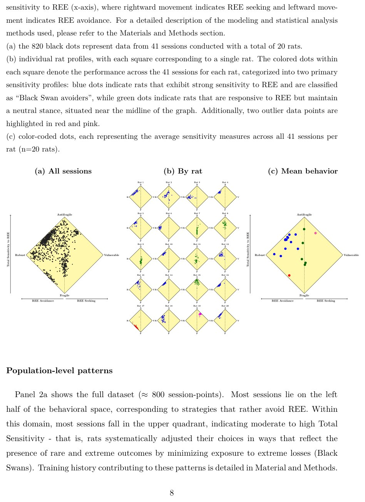
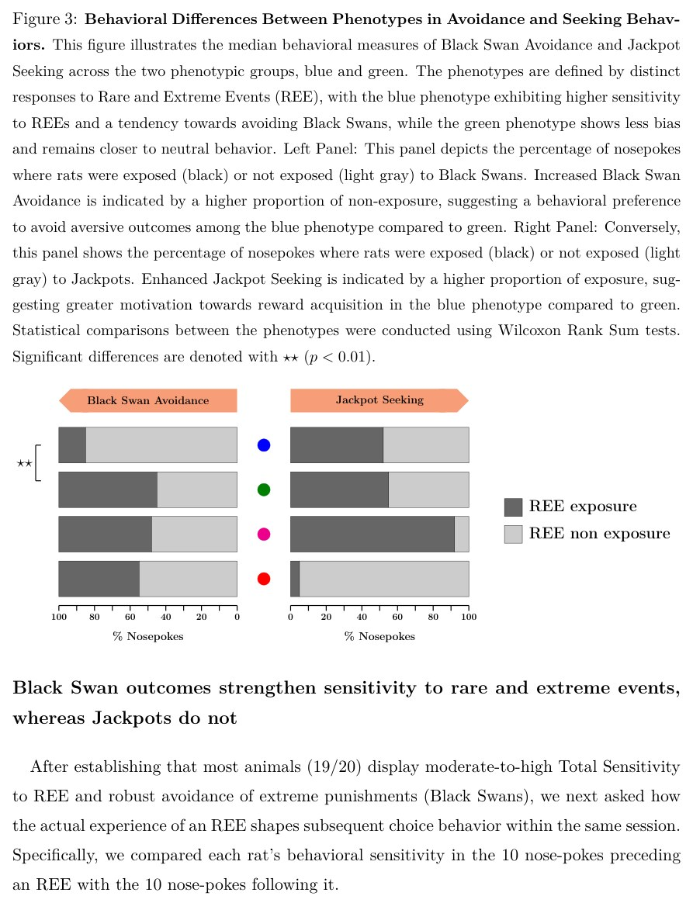
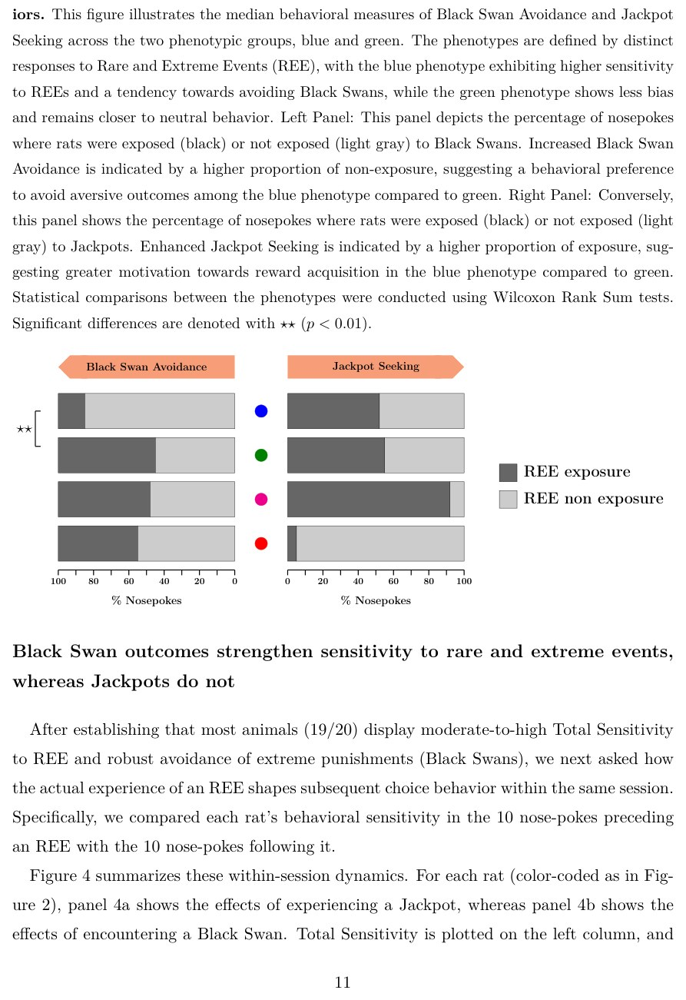

Егеуқұйрықтар қара аққулардан қалай қашып, джекпот іздейді

Көптеген зерттеулер шешімдерді болжамды жағдайда тексереді, бірақ шынайы өмір маңызды нәтижелерге толы. Мамандар кеміргіштердің сирек және шектен тыс жағдайларға қалай бейімделетінін тексерді. Ми рутина мен төтенше оқиғаларды бөлек қарастыратыны белгілі болды.
Басты ойлар
- Егеуқұйрықтар сирек жазадан қашу үшін ұсақ шығындарға шыдайды.
- Бөлек салмақтары бар модель жануарлардың таңдауын жақсы сипаттайды.
- Ми таралу шеттерін рутинадан бөлек өңдейді.
Толығырақ
Мінез-құлық тесттерінде нәтижелердің ықтималдығы көбінесе он пайыздан асады. Авторлар ықтималдығы бір пайыздан аз және орташа мәнінен он стандартты ауытқудан асатын сирек оқиғаларды (REE) бағалау ортасын жасады. Төрт тармақты бандит тестінде жануарлар қант түйіршіктері мен уақытты жоғалту жазалары арасында таңдау жасады.
Кеміргіштердің мінез-құлқы асимметрияны көрсетті. Егеуқұйрықтар «қара аққулар» деп аталатын сирек жазалардан толық дерлік қашты, бірақ ірі ұтыстарға жартылай ұмтылды. Осының арқасында жануарлар ұсақ шығындарға төзуге келісті. Стандартты оқыту модельдері бұл стратегияны түсіндіре алмады.
Зерттеушілер сирек оқиғаларды бөлек салмақтайтын модельді қолданды. Бұл кеміргіштердің миы оқиғалардың орталық бөлігі мен шеттерін дербес өңдейтінін көрсетті. Бұл бөлініс жануарларға зілзалалардан қорғануға көмектеседі.
Шектеулер
Зерттеу зертханалық егеуқұйрықтарда жүргізілгендіктен, нәтижелерді адамдардың күрделі шешімдеріне тікелей қолдануға болмайды.
Мақаланың толық талдауы
Сирек және төтенше оқиғаларға тән сезімталдық
Түйіндеме
Авторлардың пікірінше, жануарлардың мінез-құлқын зерттеулердің көпшілігі 10%-дан астам ықтималдықтарды қарастырады, ал шынайы шешімдер көбінесе өте сирек кездесетін, бірақ салдары ауыр оқиғаларды бағалауды талап етеді. Осы олқылықтың орнын толтыру үшін зерттеушілер егеуқұйрықтардың сирек (< 1%) және экстремалды (орташа мәннен 10 стандартты ауытқудан асатын) оқиғаларға (REE) қалай бейімделетінін өлшеу үшін тәжірибелік және есептеу жүйесін жасады.
Төрт рычагты бандит тапсырмасын қолдана отырып, жануарлар ықтимал марапаттар (қант түйіршіктері) немесе жазалар (күту уақыты) арасында таңдау жасады. Бұл стандартты және ауыр құйрықты таралулар туралы ақпараттың қалай біріктірілетінін зерттеуге мүмкіндік берді.
Жануарлардың мінез-құлқы шектеулі әртараптандыруды (әдетте төрт опцияның екеуін таңдау) және REE-ге сезімталдықты көрсетті. Егеуқұйрықлар сирек және экстремалды жазалардан («қара аққулар») жүйелі түрде қашты, бірақ сирек және экстремалды ұтыстарға («джекпоттар») делуге ішінара жол берді. Бұл асимметрия жиі болатын үлкен ұтыстардан бас тарту және жиі болатын шығындарды қабылдау арқылы қол жеткізілді.
Нәтижелерді түсіндіру үшін зерттеушілер REE-ні жиі болатын оқиғалардан бөлек бағалайтын күшейтілген оқыту моделін қолданды. Стандартты Q-оқыту моделі байқалған асимметрияны қайталай алмады, ал жаңа модель егеуқұйрық миы орталық таралу мен оның шеткі аймақтарын бөлек қарастыратынын сәтті көрсетті.
Сирек және экстремалды оқиғалар туралы зерттеуге кіріспе
Авторлардың пікірінше, белгісіздік жағдайында адамдар мен жануарлардың бейімделу тәртібінде ортаны зерттеу (exploration) мен жинақталған тәжірибені пайдалану (exploitation) негізгі құрамдас бөліктер болып табылады. Дегенмен, мұндай мінез-құлық процестері өте сирек кездесетін және зор салдары бар нәтижелермен — Сирек және экстремалды оқиғалармен (REE) қалай реттелетіні әлі де аз зерттелген. Зертханалық шешім қабылдау тапсырмаларының көпшілігі нәтиже ықтималдығы 10%-дан асатын бөліністерге сүйенеді, бұл табиғи ортаны толық көрсетпейді, өйткені табиғатта сирек оқиғалар түрлердің жойылуына әкелуі немесе технологиялық серпілістерге түрткі болуы мүмкін. Мұндай оқиғалардың ықтималдығы мен ауқымын қалыпты тәжірибе негізінде сенімді бағалау мүмкін еместіктен, REE оқыту механизмі үшін үлкен қиындықтар тудырады. Осы олқылықтың орнын толтыру үшін зерттеушілер мінез-құлық жүйелері нейроғылымында кеңінен қолданылатын егеуқұйрықтарды зерттей отырып, жануарлар 1%-дан аз ықтималдықпен және орташа нәтижеден 10 стандартты ауытқудан асатын REE-мен кездесетін төрт тармақты бандиттің жаңа түрін жасады.
Мінез-құлық стратегиялары және антихрупколық тұжырымдамасы
Эксперимент аясында авторлар егеуқұйрықтардың экстремалды жоғалтулардың ("Қара аққулар") әсерін барынша азайта отырып, экстремалды ұтыстарға ("Джекпоттар") қол жеткізу мүмкіндігін сақтайтын стратегияларды қолданатынын тексеруді мақсат етті. «Антихрупколық» концепциясына ұқсас бұл тәсіл джекпоттарды жойып, қара аққулардың әсерін сақтайтын стратегияларды «хрупкий» (нәзік) деп атады. Сонымен қатар, барлық REE-ні жоққа шығаратын «тұрақты» (Robust) және жануарларды екі REE түріне де ұшырататын «осал» (Vulnerable) нұсқалар анықталды. Тапсырма кеңістігі үш ықтималдық доменге бөлінді: қалыпты оқиғалар (шамамен 90%), сирек оқиғалар (шамамен 10%) және REE (1%-дан аз). Марапаттар мен жазалар сызықтық емес түрде масштабталды: дөңес опциялар ықтималдық азайған сайын үлкен ұтыстар әкелді (джекпоттар), ал ойыс опциялар шығындарды арттырды (қара аққулар). Теориялық талдаулар REE ортасында антихрупколық стратегиялардың оңтайлы болатынын көрсетеді, өйткені қара аққулардан қашу ішкі түрде есептелмесе, тым қымбатқа түседі.
Мінез-құлық метрикалары және REE-ге сезімталдықты бағалау
Жануарлардың әртүрлі валенттіліктегі ынталандыруларға (соның ішінде марапат ретінде қант түйіршіктері және жаза ретінде тайм-ауттар) қалай жауап беретінін бағалау үшін ғалымдар екі негізгі мінез-құлық көрсеткішін шығарды. Біріншісі — REE-ге жалпы сезімталдық, ол ұтыс және ұтылыс салаларындағы дөңес таңдаулардың жиынтық жиілігі ретінде анықталады және егеуқұйрықтардың REE-ні өз стратегиясына енгізетінін көрсетеді. Екіншісі — REE-ге бір жақты сезімталдық, бұл дөңес ұтыс таңдаулары мен дөңес шығын таңдаулары арасындағы айырмашылық ретінде есептеледі. Бұл метрика джекпот іздеу мен қара аққулардан қашу арасындағы асимметрияны сандық түрде өлшейді. Әзірленген әдіснамалық тәсіл белгісіздік жағдайында шығындар мен пайданы бағалаудың нейрондық механизмдерін зерттеу үшін жаңа мүмкіндіктер ашады.
Төрт тармақты бандиттік тапсырмада сирек және төтенше оқиғаларға сезімталдық өлшемдері
Бұл бөлімde төрт баламалы таңдау тапсырмасында егеуқұйрықтардың сирек және төтенше оқиғаларға реакциясын бағалауға арналған тәжірибелік құрылғы мен әдістеме сипатталған. Зерттеуге 20 егеуқұйрық қатысты, олардың әрқайсысы арнайы камерда 41 сессиядан өтті (Сурет 1a–b). Нәтижелердің ықтималдығы мен көлемі дөңес немесе ойыс заңдылықтар бойынша өзгеретін, бұл кәде сыйлықтар (пелеттер) мен уақытша блоктаулардың үлестірілімін қамтитын.
Зерттеушілер ұтыс пен ұтылыс функцияларын біріктіру арқылы төрт мінез-құлық опциясын қалыптастырды: анти-нәзік, нәзік, тұрақты және осал (Сурет 1c). Анти-нәзік стратегия ірі ұтыстарға қол жеткізуге мүмкіндік беріп, апатты шығындардан сақтануға көмектесті. Артықшылықтарды өлшеу үшін авторлар екі негізгі көрсеткішті есептеп шығарды (Сурет 1d): төтенше оқиғаларға жалпы сезімталдық және пайда мен шығын арасындағы асимметрияны көрсететін бір жақты сезімталдық.
Anti-fragile
Бұл кіші бөлім марапаттарды алу және шығындардан аулақ болу үшін дөңес функцияларды біріктіретін анти-нәзік таңдау опциясына арналған. Мұндай конфигурация жануарларға ірі сыйлықтармен ішінара байланыста болуға және оларды ұзақ тайм-ауттардан қорғауға мүмкіндік береді.
Бұл бөлімде p3 ретінде белгіленген аралық модельдеу параметрлері мен мінез-құлық тенденциялары қарастырылады. Олар күшейту тарихына байланысты белгілі бір опцияларды таңдау ықтималдығын сипаттайды.
Robust
Тұрақты (Robust) опция жануарлардың жойқын шығындардан толықтай аулақ болатын, бірақ ірі ұтыстардан бас тартатын стратегиясын білдіреді. Нәтижелер бойынша егеуқұйрықтардың едәуір бөлігі осы стратегияға бейімділік көрсетеді.
Fragile
Нәзік (Fragile) стратегия кішігірім тұрақты марапаттар әкеледі, бірақ кеміргіштерді төтенше шығындар қаупіне ұшыратады. Эксперименталды мәліметтер егеуқұйрықтардың басым бөлігі нәзік мінез-құлықтан аулақ болатынын көрсетеді.
Vulnerable
Осал (Vulnerable) опция ірі ұтыстар мен төтенше шығындардың әсерін біріктіріп, сыналушылар үшін белсіздік пен тәуекел деңгейін арттырады. Жануарлар теріс жағдайлардан қорғану үшін тұрақты және анти-нәзік стратегияларды таңдауға тырысады.
Негізгі фенотип: шектен тыс сыйақыларды ішінара іріктеу арқылы шектен тыс жазалардан қатаң түрде аулақ болу
Бұл бөлімде авторлар шешім қабылдау стратегияларын анықтау үшін 20 егеуқұйрықтың 41 күнлік сессия барысындағы мінез-құлық деректерін талдады. Сирек кездесетін экстремалды оқиғаларға (REE) жалпы сезімталдық пен бір жақты сезімталдықтан тұратын екі өлшемді кеңістікте Сурет 2 арқылы жануарлардың таңдаулары көрсетілді. Нәтижелер көрсеткендей, бірде-бір егеуқұйрық тек бір ғана шекті стратегияны ұстанған жоқ; барлық жануарлар түрлі нұсқаларды біріктірді.


Population-levelpatterns
2a панелінде (шамамен 800 сессияны қамтитын) негізгі деректер көрсетілген, сессиялардың көп бөлігі мінез-құлық кеңістігінің сол жақ бөлігінде орналасқан. Бұл REE-ден аулақ болу стратегияларын білдіреді. Нүктелердің көпшілігі жоғарғы квадрантқа түсіп, орташадан жоғары жалпы сезімталдықты көрсетеді — егеуқұйрықтар апатты шығындардан қашу үшін өз таңдауларын жүйелі түрде бейімдеген.
Жеке мінез-құлық профильдері
2b панелінде әр егеуқұйрықтың 41 сессия бойындағы жеке бейіндері көрсетілген. 17-егеуқұйрықты (қызыл) қоспағанда, барлық жануарлар орташа немесе жоғары жалпы сезімталдық танытты. 19-егеуқұйрық (күлгін) ең жоғары сезімталдық пен үлкен сыйлықтарды іздеу қасиетін көрсеткен жалғыз жануар болды. Қалған 18 егеуқұйрық екі тұрақты топқа бөлінді: көк топ (13 егеуқұйрық) шығындардан қашуды және сенімді нұсқаларды таңдаса, жасыл топ (5 егеуқұйрық) ұтыстар мен шығындарға қатысты симметриялы мінез-құлық көрсетті.
Сирек және экстремалды оқиғаларға (REE) сезімталдықты талдау
Авторлар жалпы сезімталдық пен бір жақты сезімталдық (жоғалтудан қашу бейімділігі) арасындағы байланысты зерттеді. Ең сезімтал 16 егеуқұйрықта оң корреляция анықталды: REE-ге күштірек жауап беретін жануарлар «қара аққулардан» (өте жағымсыз оқиғалар) азырақ қашуға бейім, бұл олардың тәуекелге бару стратегиясын өзгертетінін көрсетеді. Бұл байланыс уақыт өте келе күшейе түседі, бұл оқыту процесінде корреляция коэффициентінің 0,17-ден 0,64-ке дейін өсуімен расталады.
Сыйақы іздеу және жазадан қашудың мінез-құлық көрсеткіштері
Сурет 2-де авторлар егеуқұйрықтардың екі фенотипін салыстырады: «көк» (REE-ге жоғары сезімталдық және «қара аққулардан» қашу) және «жасыл» (бейтарап мінез-құлық). Сол жақ панель «көк» фенотиптің жағымсыз салдардан жиі қашатынын көрсетсе, оң жақ панель олардың «джекпот» (сирек кездесетін сыйақылар) алуға деген жоғары мотивациясын көрсетеді. Топтар арасындағы айырмашылықтар Уилкоксон тесті бойынша статистикалық тұрғыдан маңызды (p < 0,01).
«Қара аққу» салдары REE-ге сезімталдықты күшейтеді, ал «джекпоттар» олай етпейді
Сурет 4-те авторлар сирек кездесетін оқиғаға тап болғанға дейінгі және одан кейінгі егеуқұйрықтардың мінез-құлқындағы өзгерістерді талдайды. «Джекпот» алу таңдау стратегиясын дерлік өзгертпейтіні анықталды. Керісінше, «қара аққумен» соқтығысу REE-ге жалпы сезімталдықты жүйелі түрде күшейтеді және жоғалтудан қашу ниетін арттырады. Бұл жағымсыз сирек оқиғалардың шешім қабылдау процесіне жағымды оқиғаларға қарағанда әлдеқайда күшті әсер ететінін және жануарларда өте сақтық стратегиясын нығайтатынын дәлелдейді.


Q-оқыту модельдері егеуқұйрықтардың мінез-құлқын еліктеу үшін REE шешім қабылдаудың арнайы салмақтарын қажет етеді
Авторлар егеуқұйрықтардың мінез-құлқын дәл қайталау үшін сирек кездесетін және экстремальды оқиғаларға (REE) — «Қара аққулар» мен ірі ұтыстарға («джекпоттар») сезімталдықты біріктіретін күшейтілген оқыту (Reinforcement Learning) модельдерінің жаңа класын ұсынды. Негізгі мақсат — осы жетілдірілген алгоритмдердің нақты жануарлардың таңдауларын қаншалықты дәл көрсете алатынын бағалау. Модельдің параметрлері әрбір егеуқұйрық үшін бақыланған таңдаулар мен нәтижелер негізінде есептелді.
Жаңа модельдің басты ерекшелігі — шешім қабылдау процесінде арнайы салмақтарды қолдану арқылы қалыпты нәтижелерді сирек және экстремальды нәтижелерден ажыратуы. Нәтижелер көрсеткендей, REE-ге сезімталдықты қосу модельдің тәжірибелік деректерге өте жақсы сәйкестенетінін қамтамасыз етті, ал REE ескермейтін стандартты Q-learning моделі барлық дерлік егеуқұйрықтар үшін қабылданбады. Төрт мүмкін нұсқаның әрқайсысы үшін авторлар ұтыс пен ұтылыстың қосалқы мәндерін енгізіп, олар арнайы формулуалар мен оқыту жылдамдықтары арқылы жаңартылатынын көрсетті.
Опциялар құндылығын және сирек кездесетін төтенше оқиғалардың (REE) салмақтарын модельдеу
Авторлар стандартты Q-оқыту алгоритмін кеңейте отырып, қолжетімді әрбір таңдаудың құндылығын бағалау үшін ресми модель жасады. (2)-теңдеу екі негізгі компонентті жинақтайды: ұтыс пен ұтылыстың салмақталған ішкі мәндері (λ_g және λ_l параметрлерімен), сондай-ақ 1JP(o) және 1BS(o) индикаторлық функциялары мен γ_g және γ_l коэффициенттері арқылы «джекпоттарға» және «қара аққуларға» бөлінген сирек төтенше оқиғаларға (REE) арналған арнайы салмақтар. Әрбір әрекеттің таңдалу ықтималдығы Softmax функциясы (мультиномиальды Logit моделі) арқылы есептелді. Бастапқы модель γ_g пен γ_l үшін нөлдік мәндерді болжады, ал кеңейтілген модельдер жануарлардың сирек оқиғаларға ерекше мән беріп, оларды әдеттегі орташа марапаттардан бөлек өңдейтіні туралы гипотезаны сынады.
1-кесте бойынша модельдерді салыстыру және фенотиптердің таралуы
Модельдерді сәйкестендіру барысында зерттеушілер сегізге дейін еркін параметрді, соның ішінде ұтыстар мен ұтылыстар үшін оқу және ұмыту жылдамдығын, сондай-ақ REE салмақтарын бағалады. 1-кестеде келтірілген ақпараттық критерийлер негізіндегі салыстыру 20 жануардың 17-сінде таңдау арнайы γ_g және γ_l салмақтары арқылы анықталатынын көрсетті. Егеуқұйрықтардың көпшілігі өз шешімдерін қалыптастыру үшін осы коэффициенттерге сүйенеді. Көк егеуқұйрықтардың азгина бөлігі ғана REE-ні ішкі мәндерге де, шешім салмақтарына да біріктіреді, ал үш егеуқұйрық ерекше REE салмағын пайдаланбайды. Авторлар bunu жануарлардың сирек төтенше оқиғаларды әдеттегі сыйақылардан сапалық тұрғыдан өзгеше қабылдауының дәлелі ретінде түсіндіреді.
Сирек төтенше шығындар мен ұтыстарға қатысты асимметриялық мінез-құлық реакциялары
Үзіндінің соңғы бөлігінде әрбір егеуқұйрық үшін 41 сессия бойынша орташаланған төтенше стимулдарға реакциялар асимметриясының мінез-құлық көріністері талқыланады. Нақты байқалған сезімталдықты (2-суреттің логикасын жалғастыратын жоғарғы панель), таңдалған модельдерден алынған болжалды мәндерді (төменгі сол жақ панель) және жасанды сессиялар бойынша симуляцияларды (төменгі оң жақ панель) салыстыру модельдің болжау дәлдігінің жоғары екенін көрсетеді. Алынған нәтижелер жануарлардың сирек ірі ұтыстар мен ұтылыстарға тап болған кезде айқын асимметрия көрсететінін растайды және бұл ұсынылған тәсіл шеңберінде γ_g және γ_l параметрлері арқылы сәтті қамтылады.
Нәтижелері мен интерпретациясы
Авторлар алдымен тәжірибедегі барлық егеуқұйрықтардың сирек кездесетін оқиғаларға (REE) белгілі бір деңгейде сезімталдық көрсететінін, көп жануарларда бұл көрсеткіш орташа немесе жоғары екенін анықтады. Екіншіден, зерттеушілер басым мінез-құлық фенотипін атап өтті: кеміргіштер «қара аққулардан» (жағымсыз сирек оқиғалар) дерлік толықтай қашып, «джекпоттарға» (жағымды сирек оқиғалар) жартылай ғана ұмтылған. Алынған деректер жағымсыз және жағымды сирек стимулдарға реакция жасаудағы іргелі асимметрия ретінде түсіндіріледі.
Ықтимал шектеулерді талқылай отырып, авторлар толық джекпотқа ұмтылмауға қанығу әсер етпеді деп толық жоққа шығара алмайтынын, бірақ зерттеушілер жануарлардың оны іздеуді мүлдем тоқтатқан сәттерін тіркемегенін атап өтеді. Сирек нәтижелер әр сессиядағы 10-шы немесе 60-шы белсендіруге сәйкес келетін етіп жоспарланғандықтан (Қосымша материалдардағы S1 кестені қараңыз), жануарлар бұл заңдылықты меңгерді ме деген сұрақ туындайды. Егер кеміргіштер бұл аралықты шынымен үйреніп алса, олардың таңдау стратегиясы анағұрлым оңтайлы болар еді.
Атап айтқанда, джекпотты ұсынатын нұсқалар жиі болатын пайданы барынша арттыру тұрғысынан оңтайлы емес, сондықтан жануарлар оларды тек 10-шы және 60-шы әрекеттер кезінде ғана таңдауы тиіс еді. Олардың қалған таңдауларының көп бөлігі жиі болатын табысы үлкен нұсқаларға бағытталуы керек болатын. Алайда іс жүзінде байқалатын мінез-құлық мүлдем басқаша көрінеді.
Сирек оқиғалардың асимметриясы және мінез-құлық стратегиялары
Авторлар жағымсыз экстремалды оқиғалардан (қара аққулардан) қашу мен оң екпінді нәтижелерге (джекпоттарға) ұмтылу арасындағы іргелі айырмашылықты талдайды. Тәжірибе жағдайында егеуқұйрықтар шығындардың белгілі бір дөңес кестелерін таңдау арқылы ірі шығындардан толықтай аулақ бола алды, ал сирек кездесетін оқиғалардың стохастикалық табиғаты салдарынан джекпоттың орындалуы ешқашан кепілдендірілмеген еді (мысалы, 150 әрекет кезінде ықтималдығы 1% болатын оқиғаның көріну ықтималдығы шамамен 78% құрап, нөлдік нәтиже ықтималдығын да қалдырады). Бұл асимметрия жануарларды тәуекелдерді әртүрлі бағалауға мәжбүр етеді: жиі кездесетін ұсақ ұтыстар мен шығындар «қылғын» нұсқаны тартымды етеді, бірақ антифрагильді және сенімді опцияларды біріктіру арқылы қара аққулардан толық қашу жалпы стохастикалық үстемдікті қамтамасыз етеді. Керісінше, толық джекпот соңынан қуу тиімсіз, өйткені жиі болатын ұсақ табыстардан айырылу супер жүлдемен толық өтелмейді, сондықтан аралас стратегия тиімдірек болады.
Егеуқұйрықтардың оқуы және кеңістіктік немесе уақытша әсерлердің жоқтығы
Эмпирикалық нәтижелер «көк» егеуқұйрықтар қара аққулардан қашу үшін сенімді және антифрагильді опцияларды біріктіріп, осы логиканы сәтті меңгергенін көрсетеді, ал «жасыл» егеуқұйрықтар антифрагильді және нәзік опцияларды араластырып, тәуекелге баруын жалғастырды. Жануарлар мінез-құлық икемділігін көрсеткендіктен, зерттеушілер кеңістіктік бейімділіктің әсерін жоққа шығарды. Жаттығу кезінде сүйікті тесік антифрагильді опцияға арнайы берілсе және сирек оқиғалар 10-шы және 60-шы әрекеттерге жоспарланғанымен, егеуқұйрықтар белгілі бір уақытқа немесе орынға тәуелді болып қалған жоқ. Бұл олардың бастапқы жағдайларға қарамастан барлық опцияларды өз бетінше меңгергенін дәлелдейді.
Стохастикалық үстемдікті меңгеру жылдамдығы
Теориялық тұрғыдан жануарлар жиі болатын салалардағы стохастикалық үстемдікті тез анықтауы тиіс, бірақ бұрынғы жұмыстар мен ағымдағы деректер бұл үшін көптеген сессиялар қажет екенін көрсетеді. Авторлар мұны ықтималдықтарды дұрыс бағалау үшін жануарларға сирек оқиғалардың әлі орын алмағанын және оларды болжамды үлгіден алып тастауға болатынын түсіну үшін үлкен тәжірибе қажет екендігімен түсіндіреді.
Кеңейтілген Q-оқыту модельдері REE кодтау үшін арнайы нейрондық жолды ұсынады
Авторлар алынған деректерді перспективалар теориясы, шығыннан қашу және белгісіздік тұрғысынан талдайды. Эксперимент егеуқұйрықтардың сирек кездесетін экстремалды оқиғаларға (REE) қатысты белгісіздікті азайту стратегиясын қолданатынын көрсетті: олар «Қара аққулардан» аулақ болып, «Джекпоттарға» деген белгілі бір қызығушылықты сақтайды. Классикалық Q-модельдері бұл мінез-құлықты сипаттай алмады, ал REE-ге сезімталдығы бар жетілдірілген Q-модельдер γl параметрі арқылы нәтижелерді дәл қайталады.
Жетілдірілген Q-модельдердің жоғары дәлдігіне сүйене отырып, зерттеушілер жаңа нейробиологиялық гипотезаны ұсынады. Талдау көрсеткендей, «көк» топтағы 13 егеуқұйрық әдеттегі REE-ні Q-мәндерін жаңартудан алып тастайды, бірақ теріс γl параметрі арқылы «Қара аққуларға» қарсы ерекше сезімталдық көрсетеді. Бұл жануарлардың нұсқаларды бағалау кезінде мұндай экстремалды шығындарды орташа мәнге бөлмейтінін, керісінше қауіпті опциялардың субъективті құнын төмендететін арнайы салмақ коэффициентін қолданатынын білдіреді.
Адамдар үшін маңызы
Авторлар егеуқұйрықтарда алынған нәтижелерді адамдардың қабылдауы мен жады ерекшеліктерімен салыстырады, мұнда сирек және экстримді стимулдар да жоғары маңызға ие. Мұндай сирек оқиғаларды (REE) өңдеу әдеттегі сыйақыларға жауап беретін классикалық дофаминерgикалық жолдардан ерекшеленетін арнайы нейрондық желілерге сүйенуі мүмкін екендігі талқыланады.
Жұмыста алдыңғы аралшық және бадамша тәрізді дене сияқты ми құрылымдары эмоциялық маңыздылық пен болжауға болмайтын нәтижелерді өңдеудегі рөлін ескере отырып, экстримді шығындар мен ұтыстарды есепке алуға жауапты болуы мүмкін деп болжанады. Есептеу тұрғысынан алғанда, шектен тыс ауытқуларды жалпы деректерден бөлек қарастыру бағалаулардың бұрмалануын болдырмауға көмектеседі, бұл өзгермелі ортада бейімделу артықшылықтарын береді және болашақ нейроғылыми зерттеулер үшін жаңа бағыттар ашады.
AnimalSubjects
Бұл бөлімде зерттеу барысында пайдаланылған биологиялық модельдер сипатталған. Тәжірибе үшін салмағы келу кезінде шамамен 200 грамм болатын ересек Lister Hooded тұқымды 20 аталық егеуқұйрық қолданылды. Жануарлар арнайы торларда жұптасып ұсталып, бақыланатын микроклимат пен кері жарық циклі жағдайында бағылды.
Мінез-құлық сынақтары кезінде мотивацияны сақтау үшін кеміргіштердің азық рациондары тәуліктік норманың 80 пайызына дейін шектелді, ал су еркін түрде берілді. Жануарларды күтіп-баптау және олармен жұмыс істеу бойынша барлық процедуралар Францияның заңнамалық нормаларына қатаң сәйкес жүргізіліп, жергілікті этика комитетінің ресми мақұлдауынан өтті.
Apparatus
Бұл бөлімше тәжірибенің техникалық жабдықталуына арналған, алайда берілген үзіндіде мәтін атауымен аяқталады. Жабдықтар жануарларда сирек кездесетін төтенше жағдайлардан қашу және үлкен марапаттарды іздеу стратегияларын бағалау міндеттерін жүзеге асыру үшін жобаланған.



Зерттеу сызбасы
Препринт әлі рецензиядан өтпеген. Қорытындылар алдын ала.
Дереккөз
| Санат | Препринт лицензиясы |
|---|---|
| animal behavior and cognition | все права у авторов |
Дереккөздер
| Дереккөз | Сілтеме |
|---|---|
| Страница препринта | biorxiv.org |
| Полный текст (PDF) | biorxiv.org |
| DOI | doi.org |
| Метаданные Crossref | api.crossref.org |
| Europe PMC | europepmc.org |
Бөлісу